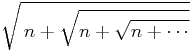
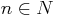
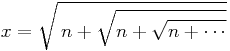
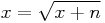
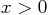
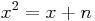
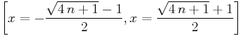
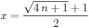

;; -*- mode: imath -*-
;; Please type C-c $ to convert all maxima and latex forms into images.
;; (C) 2004 Yasuaki Honda (yhonda@mac.com)
Q: Find the value of a formula  for  .
A: Let's define x as the value of the given formula:
 .
Then x satisfies the formula  .
Remember  , take square of the formula, we obtain
 . The solution of the formula is:

Since , we know that the latter is the answer.
 .